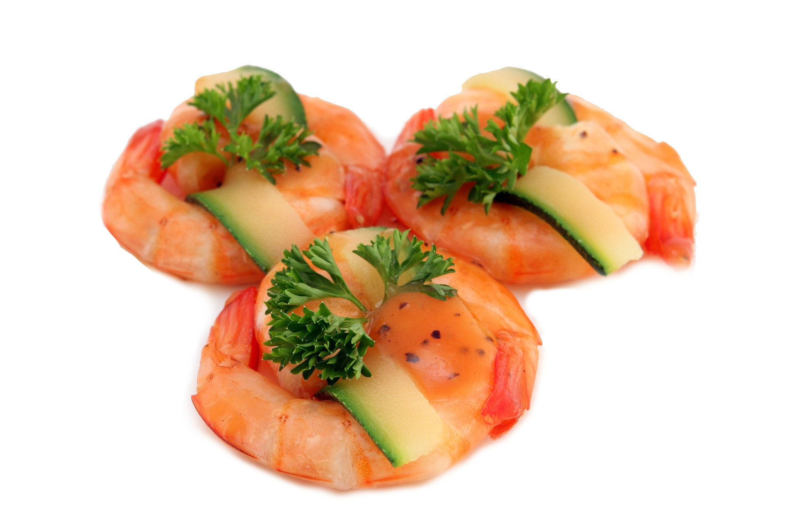

Restaurante Japonés Sushiito
"La verdadera esencia de nuestra cocina está en la alta calidad de las materias primas, junto con el mimo y pasión con la que nuestros chefs elaboran cada una de las recetas aprendidas generación tras generación"
Hichito Nishimura: Gerente de Sushiito
Exclusivo servicio de entrega a domicilio
Disfruta de un placentero combinado de sushi fresco preparado por nuestros chefs sin tener que renunciar de la comodidad de estar en casa. Evita largas colas de espera si no has podido reservar en el restaurante físico. Los pedidos son cuidadosamente acomodados en bentos, conservando el 100% del aroma y textura de una cocina tradicional japonesa de calidad.

Algunas sugerencias para disfrutar en familia

Gran bento de 56 piezas nigiri-sushi

Bento espacial beso del dragón

Bento unipersonal fantasía chef

Gambas moriwase teppanyaki

Bento unipersonal tradicional

Uramaki especial de atún picante